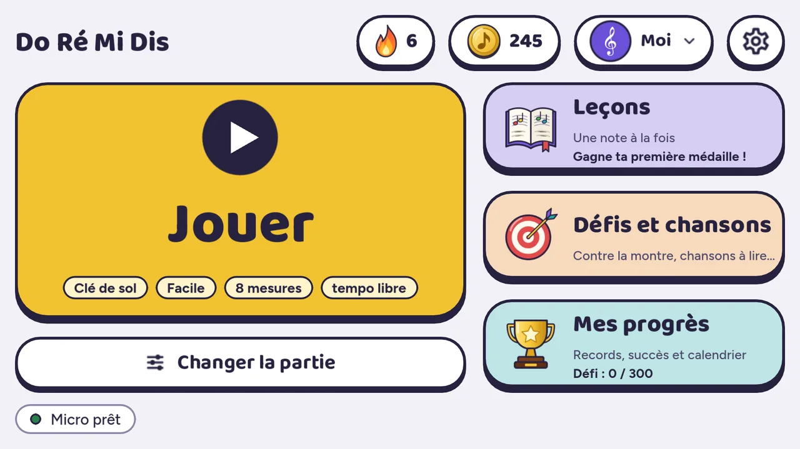
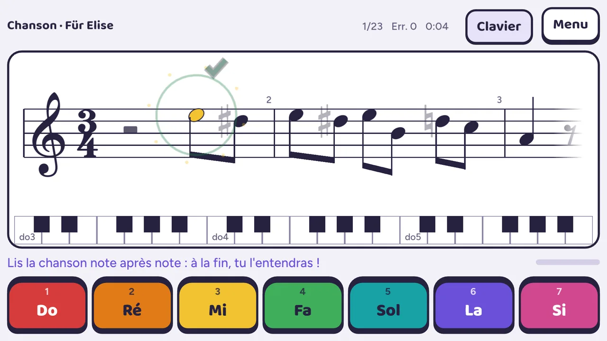
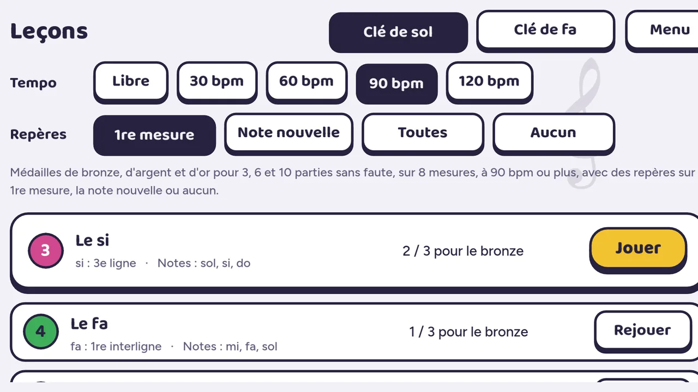
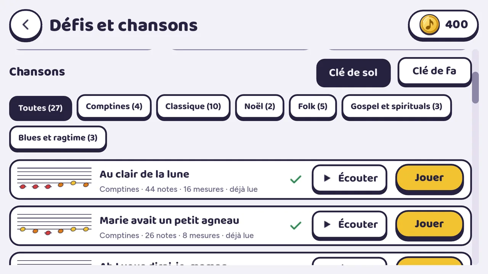
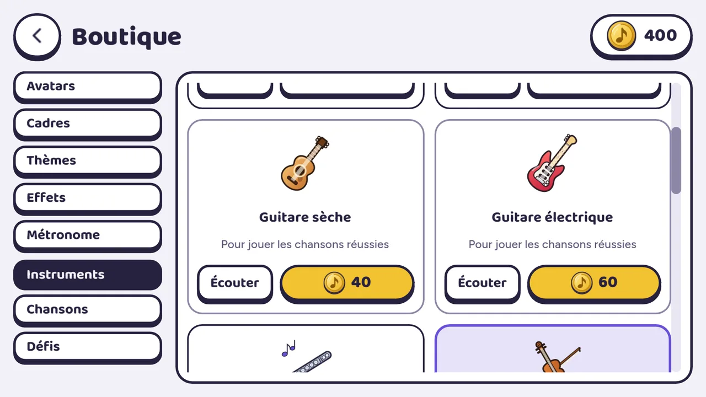
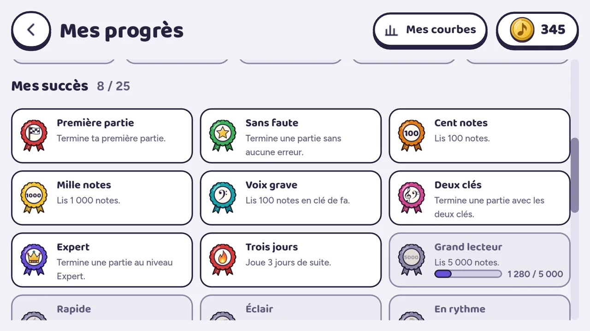

On dit le nom de la note
La reconnaissance vocale comprend do, ré, mi, fa, sol, la, si et valide la note dès qu'elle est dite. Elle fonctionne sans connexion. On peut aussi répondre avec des boutons.
Do Ré Mi Dis apprend aux enfants à lire les notes de musique. Une note s'affiche sur la portée, l'enfant dit « do », « ré », « mi »… et l'appli l'écoute et valide aussitôt.
Bientôt sur Google Play Gratuit, avec des publicités adaptées aux enfants · Android 7 ou plus récentLa reconnaissance vocale comprend do, ré, mi, fa, sol, la, si et valide la note dès qu'elle est dite. Elle fonctionne sans connexion. On peut aussi répondre avec des boutons.
En clé de sol et en clé de fa, une note nouvelle à la fois, avec des médailles de bronze, d'argent et d'or. Des parties libres de quatre niveaux, au tempo libre ou au métronome.
Comptines, classique, Noël, folk, gospel, blues : on lit la chanson, puis on l'écoute avec son accompagnement, jouée par l'instrument de son choix, et on la réécoute quand on veut. Et des défis : contre la montre, note mystère, défi inversé.
Elles se gagnent en jouant et se dépensent dans la boutique : avatars, cadres, thèmes, effets de victoire, sons du métronome, instruments. Aucun achat avec de l'argent.
Elle compte les jours joués d'affilée. Un calendrier, des records et 25 succès à débloquer, chacun avec sa jauge, montrent les progrès.
Chacun a son profil, avec ses propres progrès, et le défi de la semaine se relève ensemble.





